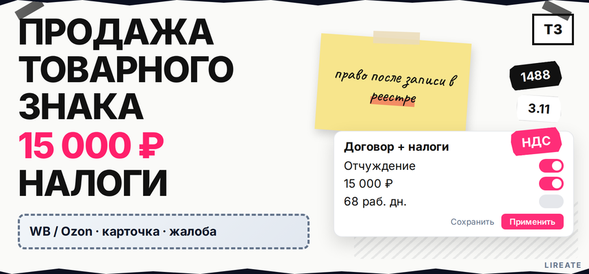
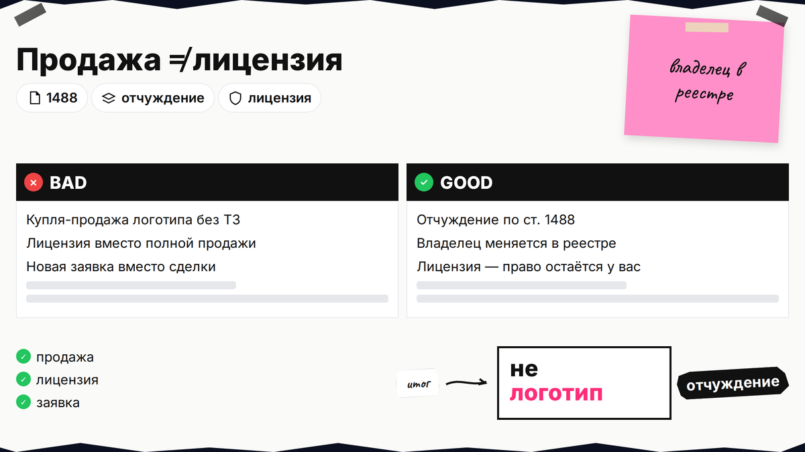
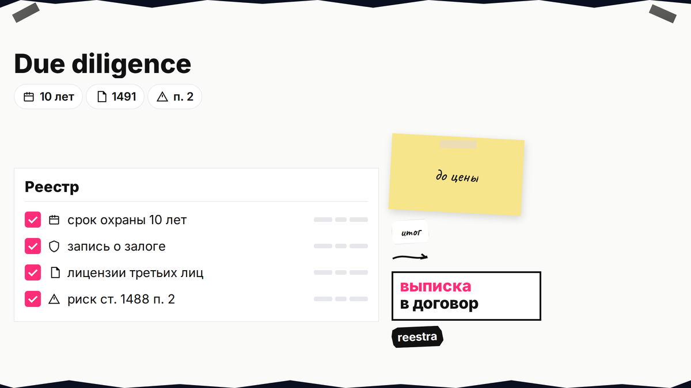
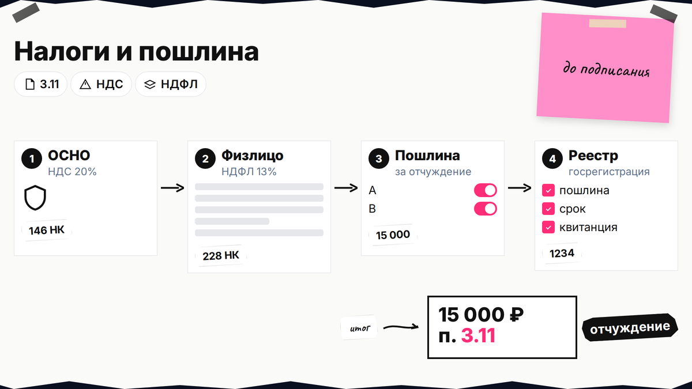

Вы хотите продать товарный знак и уже договорились о цене с покупателем, но бухгалтер спрашивает про НДС, а юрист - про запись в Роспатенте. На практике продажа бренда это не "договор купли-продажи логотипа": нужен договор об отчуждении исключительного права, пошлина 15 000 ₽ по п. 3.11 и госрегистрация. До записи в реестре покупатель не правообладатель, даже если вы уже получили деньги. Ниже вы пройдёте путь проверка → цена → договор → налоги → реестр без путаницы с лицензией.

TL;DR / Быстрый инсайт: Продать товарный знак значит оформить отчуждение по ст. 1488 ГК РФ и зарегистрировать договор в Роспатенте (ст. 1490). Право у покупателя возникает только после госрегистрации (ст. 1234 п. 4). Пошлина п. 3.11: 15 000 ₽ за первый знак (таблица Роспатента). Налоги зависят от режима продавца и покупателя: отчуждение не равно "просто лицензия" и не освобождается автоматически от НДС.
Гайд для владельца бренда: ИП, ООО, иногда физлицо. Нормы сверены на 10.11.2026. Не юридическая и не налоговая консультация; расчёты - с бухгалтером. Исключительное право - монополия на обозначение в классах МКТУ; при продаже передаёте её, а не "разрешение пользоваться" логотипом.

Если цель - получить деньги и выйти из бренда, вам нужна продажа (отчуждение). Если хотите сохранить владение, но пустить партнёра пользоваться знаком - лицензия. Если вы закрываете старое имя и строите другое с нуля - это уже не сделка, а новая регистрация товарного знака.
| Модель | Кто владелец в реестре | Типовой налоговый эффект |
|---|---|---|
| Продажа (отчуждение) | Меняется на покупателя | Доход продавца; у плательщика НДС - НДС с отчуждения в общем порядке |
| Лицензия | Остаётесь вы | Роялти; передача права использования ТЗ по лицензии облагается НДС |
| Новый знак | Новая заявка | Пошлины регистрации, без "покупки" чужой монополии |
Механика отчуждения по шагам - в гайде по договору и реестру; здесь коммерческая сделка: цена, налоги, риск оплаты до записи.
Делайте: зафиксировать в переговорах, что речь об отчуждении, а не о договоре франшизы. Не делайте: называть сделку "куплей-продажей логотипа" без ссылки на номер регистрации ТЗ.

Покупать можно только действующий знак: срок охраны 10 лет с даты подачи заявки (ст. 1491). Просроченный без продления продать нельзя - сначала логика продления товарного знака.
Если вместо продажи меняете имя - знак занят; о целесообразности актива - нужен ли ТЗ.
Делайте: приложить к договору выписку из реестра на дату переговоров. Не делайте: обещать эксклюзив, если в реестре уже есть лицензия третьему лицу.

Цена должна быть обоснована: занижение между связанными лицами - налоговый риск. Смотрят узнаваемость, выручку под брендом и остаток срока до продления. Отчёт по ФСО XI - при крупной или спорной сделке; иначе согласованная рыночная сумма в договоре.
Делайте: привязать цену к остатку 10-летнего цикла и обороту под брендом. Не делайте: продавать знак за символический 1 ₽ между связанными ООО без налогового сопровождения.
Покупатели чаще всего из той же отрасли: конкурент, франшизер, покупатель бизнеса "под ключ" или инвестор, которому нужна готовая монополия на имя. Ищут через M&A-брокеров, патентные бюро, отраслевые чаты и профильные площадки сделок с нематериальными активами.
До обмена P&L и договорами подпишите NDA. Предварительные условия (цена, сроки подачи в Роспатент, кто платит 15 000 ₽) лучше оформить письмом или LOI, чтобы не терять переговоры на устных обещаниях.
Делайте: проверить покупателя в реестре так же, как проверяете знак. Не делайте: передавать доступы к кабинетам маркетплейсов до записи отчуждения.
Договор только в письменной форме (ст. 1490 п. 1). Существенные условия возмездного отчуждения - предмет (ТЗ с номером) и вознаграждение (ст. 1234 п. 3). Между коммерческими организациями безвозмездная передача по общему правилу не допускается (п. 3.1).
Без регистрации переход права несостоялся (ст. 1232 п. 6). Договор и пакет в ведомство - на регистрации товарного знака Лирейт (без гарантии решения Роспатента).
Делайте: хранить три экземпляра договора для подачи. Не делайте: писать в договоре, что права перешли "с даты подписания".
Отчуждение - передача имущественных прав (ст. 146 НК РФ). Льгота пп. 26 п. 2 ст. 149 - про лицензии на ряд объектов, не про продажу ТЗ целиком. У ООО на ОСНО отчуждение чаще облагается НДС 20%, если режим не даёт иного.
| Кто продаёт | Что учесть | Ориентир |
|---|---|---|
| ООО на ОСНО | НДС с цены; прибыль с разницы цены и остаточной стоимости НМА | ст. 268 НК РФ; ставка прибыли 25% с 2025 г. |
| УСН | НДС при снятии с освобождения; доход на УСН с момента сделки по правилам режима | Сверка с бухгалтером, дата признания дохода |
| Физлицо-продавец | НДФЛ платит сам продавец, ИП-покупатель не удерживает как агент | ст. 228 НК РФ; 13% (15% при доходе свыше 5 млн ₽/год) |
Доход в бухучёте часто признают с госрегистрации, не с даты подписания.
Делайте: согласовать налоговую схему и дату документов до обмена деньгами. Не делайте: копировать из статей в интернете формулировку "НДС не берут при продаже ТЗ" без проверки сторон и режима.
15 000 ₽ за первый товарный знак в заявлении и 13 000 ₽ за каждый следующий (п. 3.11). Бумажное свидетельство по желанию - +3 000 ₽. Ориентир по сроку услуги - 68 рабочих дней, решение о регистрации или отказе - до 45 рабочих дней (административный регламент).
Workflow продажи: due diligence в реестре → договор отчуждения → налоговый расчёт → оплата 3.11 → заявление (госуслуга регистрации распоряжения) → запись в reestre → расчёты и обновление контрагентов
Документы и односторонняя подача - в гайде по отчуждению. Не путайте п. 3.11 с пошлиной новой заявки.
Электронная подача через личный кабинет Роспатента с УКЭП (усиленная квалифицированная электронная подпись) сокращает почтовые задержки, но не ускоряет предельные сроки регламента.
Делайте: заложить 2-3 месяца в календарь сделки и сохранить УИН платежа. Не делайте: тиражировать устаревшие суммы 13 500 ₽ из старых SEO-статей без сверки с таблицей Роспатента.
Продавец прекращает использование знака: упаковка, домен, маркетплейсы. Закройте бухучёт (НМА у покупателя, доход у продавца). Срок 10 лет сохраняется - продление на новом владельце.
Делайте: передать файлы фирменного стиля и доступы только после регистрации. Не делайте: выпускать товар под проданным брендом, полагаясь на устную договорённость.
Сравните юридические детали с отчуждением и реестром, проверьте срок с продлением. Рубрика "Товарный знак". Сопровождение сделки - регистрация товарного знака в Лирейт.
Кратко опишите задачу: бренд, видео, перевод или товарный знак. Подскажем следующий шаг по ГК РФ.
Материал проверен: редакция Лирейт; ст. 1488, 1490, 1232, 1234 ГК РФ; ст. 146, 149, 228, 268 НК РФ; пошлина п. 3.11; приказ 371.
Достоверность данных: 10.11.2026. Показы Яндекс Вордстат не включались (MCP недоступен).
Нет для смены правообладателя. Без госрегистрации переход права не состоялся (ст. 1232 п. 6). Деньги за "проданный" бренд без подачи в ведомство не дают покупателю монополии в reestre.
При продаже меняется владелец в реестре; при лицензии - только право пользования. Налоги и документы разные, регистрация в обоих случаях обязательна.
15 000 ₽ по п. 3.11 за первый товарный знак в заявлении; каждый следующий в том же заявлении - +13 000 ₽.
Как правило да, по ст. 146 НК РФ со ставкой 20%, если режим не даёт иного. Сверьте с бухгалтером до счёт-фактуры.
Нет. Физлицо-продавец сам исчисляет и платит НДФЛ с дохода от продажи имущественных прав (ст. 228 НК РФ).
Не в каждой сделке: для SMB часто хватает цены в договоре. Оценщик - при крупной сделке или вкладе в уставный капитал.
В момент государственной регистрации договора об отчуждении в Роспатенте (ст. 1234 п. 4), а не в день подписания на столе у нотариуса.